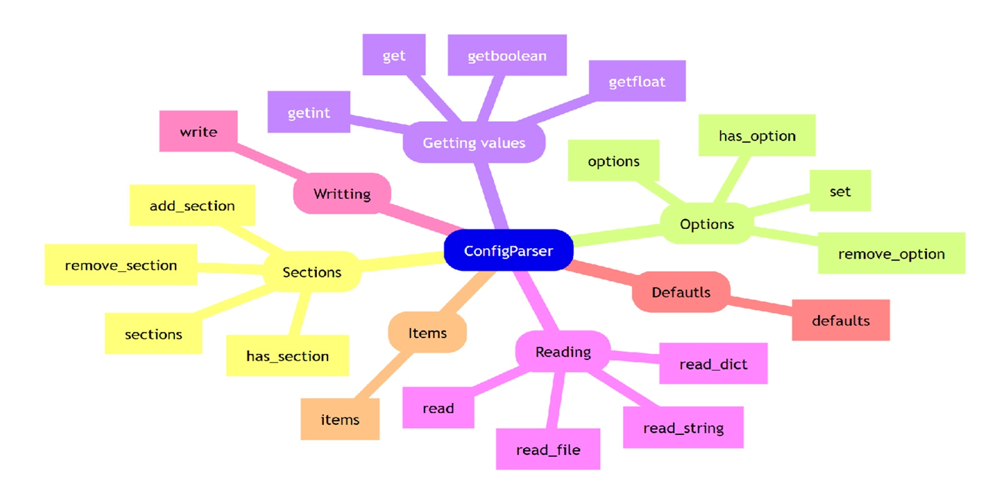

configuration_string = '''
[DEFAULT]
name = Giliard Godoi
email = ggodoi@email.com
local = Brasil
secret_agent = True
year = 2020
# Isso é um comentário
[education] # Define-se uma nova seção com colchetes
school = Federal University of Technology - Paraná
major = Software Development
year = 2018
# This is a list of skills
[skills]
programing :
Python
JavaScript
C
C++
language :
Portuguese
English
'''
Existem várias especificações para arquivos de configuração ou parametrização, tais como os arquivos ini, yaml, e toml. Cada uma dessas especificações define uma forma de organizar as informações e representar tipos comuns das linguagens de programação como inteiros (int), números de ponto flutuante (float), valores booleanos (bool), strings, e até mesmo estruturas de dados como listas e dicionários.
Nessa postagem vamos conhecer um pouco sobre a biblioteca padrão da linguagem Python para manipular arquivos ini, a biblioteca configparser.
Essa especificação foi inicialmente projetadas para sistemas do Microsoft Windows, porém, com o tempo, passou a ser adotada por outras empresas, aparecendo inclusive em softwares open source sob a extensão cfg.
Vamos cobrir algumas funcionalidades básicas dessa biblioteca e, para um entendimento mais detalhado, o leito interessado poderá consultar a documentação oficial da bibliotecaconfigparser.
Definição do arquivo
O arquivo de configuração ini é organizado por seções, representada por uma palavra entre colchetes. Todo arquivo possui uma seção default que vem no início do arquivo. Os parâmetros são definidos sob o esquema chave e valor em cada uma das seções.
As principais características desse formato são:
- Podem ser utilizados como delimitadores de valor os caracteres ‘
=’ ou ‘:’. - Comentários são precedidos pelo caracter ‘
#’ - Todos os valores são convertidos para
string, e por padrão não existe a conversão dos valores para tipos básicos da linguagem. - Porém, existem alguns métodos especiais para converter os valores para determinado tipo;
- Ao realizar o parse de um arquivo, a estrutura de dados retornados se assemelha a um dicionário do Python.
A seguir, é mostrado um exemplo de como um arquivo de configuração é definido
Para manipular esse arquivo, vamos fazer a importação da biblioteca.
import configparserDepois instanciamos um objeto do tipo ConfigParser, porém ele ainda está vazio, isto é, sem campos ou valores definidos.
config = configparser.ConfigParser()
type(config)configparser.ConfigParserA partir do objeto config, podemos realizar o parse de uma string de configuração da seguinte maneira, populando as suas seções e valores.
config.read_string(configuration_string)
type(config)configparser.ConfigParserCada seção é acessível pelo seu nome, de forma semelhante a um dicionário.
# O que é uma seção?
config['DEFAULT']<Section: DEFAULT>O método sections retorna quais as seções definidas pelo arquivo. No nosso exemplo temos as seções education e skills. Note que a seção DEFAULT não é retornada.
# Como saber quais são as demais seções?
config.sections()['education', 'skills']Também é possível verificar se uma seção existe em um arquivo de configuração pelo método has_section ou pelo o operator in.
# Como verificar se uma seção existe dentro de config?
('education' in config) or config.has_section('education')TruePara conhecer quais os parâmetros de uma seção, podemos utilizar o método options passando o nome de uma seção.
config.options('education')['school', 'major', 'year', 'name', 'email', 'local', 'secret_agent']Mas se utilizarmos esse método para tentar descobrir as opções da seção DEFAULT nós obtemos um erro
try:
config.options('DEFAULT')
except Exception as e:
print(type(e), e)<class 'configparser.NoSectionError'> No section: 'DEFAULT'Isso porque a seção default serve como um default. Isto é, se procurarmos uma opção em uma das seções e essa opção não estiver definida para aquela seção, o valor retornado será aquele presente na seção DEFAULT. Veja o exemplo a seguir:
print(
config.get('education', 'year'),
)
print(
config.get('skills', 'year') # não foi definido a opção year nesta seção
)2018
2020Porém, o método defaults retorna um dicionário contendo os parâmetros e respectivos valores presentes nessa seção.
config.defaults(){'name': 'Giliard Godoi',
'email': 'ggodoi@email.com',
'local': 'Brasil',
'secret_agent': 'True',
'year': '2020'}É possível verificar ser uma opção foi definida em uma seção através do método has_option.
# Como verificar se existe uma opção (chave) dentro de uma seção?
config.has_option(section='education', option='year')TrueNesse método, se o valor correspondente a section for passado como None ou uma string vazia, o valor da opção definida na seção DEFAULT é retornado.
# Como verificar se existe uma opção para a seção default?
config.has_option(section=None, option='company')FalseOs valores das opções (ou parâmetros) também estão acessíveis por indexação.
# Como acessar um valor na seção default?
config['DEFAULT']['name']'Giliard Godoi'# Como acessar um valor em uma outra seção?
config['education']['school']'Federal University of Technology - Paraná'Também é definio o método get para acessar o valor definido nos parâmetros. Como parâmetros esses métodos recebem o nome da seção e da opção que queremos consultar.
# ou então, utilizar o método get
config.get(section='education', option='school')'Federal University of Technology - Paraná'É importante dizer que a operação de parser do arquivo de configuração .ini não realiza a conversão dos dados para tipos primitivos da linguagem. Assim, todos os valores são retornados como string.
# Qual é o tipo de dado retornado por padrão?
type(
config['education']['year']
)strA lista de linguagens de programação por exemplo, são retornadas como uma string e cada valor é separado pelo caracter de quebra de linha \n.
# Isso serve também para listas?
config['skills']['programing']'\nPython\nJavaScript\nC\nC++'Para retornar esses valores como uma lista de strings, podemos utilizar o método split, conforme o exemplo a seguir.
# Como converter os valores para listas?
config['skills']['programing'].split()['Python', 'JavaScript', 'C', 'C++']Existem alguns métodos derivados de get que realizam a conversão para tipos primitivos, sendo eles: - getint - getboolean - getfloat
# Como converter o valor de uma variável para um tipo específico?
print(f'''
-----------------------------------
{config.get(section='education', option='school')} : {type(config.get(section='education', option='school'))}
{config.getint('education', 'year')} : {type(config.getint('education', 'year'))}
{config.getboolean('DEFAULT', 'secret_agent')} : {type(config.getboolean('DEFAULT', 'secret_agent'))}
-----------------------------------
''')
-----------------------------------
Federal University of Technology - Paraná : <class 'str'>
2018 : <class 'int'>
True : <class 'bool'>
-----------------------------------
type(
config.getint('education', 'year')
)inttype(
config.getboolean('DEFAULT', 'secret_agent')
)boolO método get também define um parâmetro fallback que é retornado se a opção desejada não existe na seção e nem foi definida em default.
# É possível definir um valor fallback nos métodos get?
assert not config.has_option(section='company', option='name')
config.get(section='company', option='name', fallback='Does not exist')'Does not exist'Também é possível retornar um dicionário com os parâmetros e respectivos valores presentes em uma seção. Note que todos os valores discriminados na seção default também são retornados. Isso pode ser bom ou uma falha de segurança, a depender do caso.
# Como obter os itens (chave-valor) para uma seção?
config.items('education')[('name', 'Giliard Godoi'),
('email', 'ggodoi@email.com'),
('local', 'Brasil'),
('secret_agent', 'True'),
('year', '2018'),
('school', 'Federal University of Technology - Paraná'),
('major', 'Software Development')]# Como obter os itens (chave-valor) para a seção default?
config.defaults(){'name': 'Giliard Godoi',
'email': 'ggodoi@email.com',
'local': 'Brasil',
'secret_agent': 'True',
'year': '2020'}Arquivos
O arquivo de configuração definido no início dessa postagem pode ser salvo passando um ponteiro de arquivo para o método write.
# Como salvar as configurações em um arquivo?
with open('config.ini', 'w') as f:
config.write(f)Para ler novamente esse arquivo, podemos fazer a leitura desse arquivo através do método read.
# Como ler o arquivo config.ini?
other = configparser.ConfigParser()
other.sections() # o arquivo está vazio[]other.read('config.ini')['config.ini']other.sections()['education', 'skills']